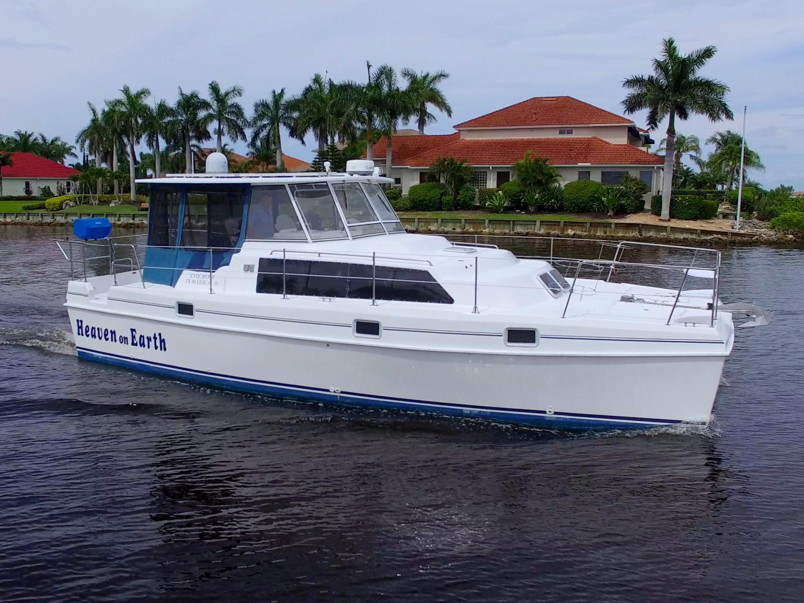

B-Atlas Boat Guide · ENDE-36-TR
Endeavour TrawlerCat 36 Power Catamaran
1998–2005
The Endeavour 36 TrawlerCat is a power catamaran designed around shallow draft, broad interior volume and efficient twin-diesel cruising. The 36 uses a protected lower helm rather than a flybridge; its principal ownership trade-off is exceptional beam for its length.

- Length
- 36 ft
- Beam
- 15 ft
- Draft
- 2.83 ft
- Hull behaviour
- Catamaran
- Fuel
- Diesel
- Propulsion
- Shaft
- Engine configuration
- Twin 100 hp Yanmar diesel inboards
- Boat family
- Trawler
- Construction
- Fiberglass
Best for
- Couples prioritizing interior space and shallow draft
- Bahamas, coastal and Great Loop cruising where beam is acceptable
- Owners who value catamaran stability and twin-engine maneuverability
Trade-offs
- Exceptional beam restricts marina, lock and haul-out choices
- Two propulsion systems increase service count and cost
- Bridge-deck motion or pounding can occur in short steep chop depending on speed and loading
Known concerns
- No model-specific concern has been promoted to B-Atlas’s evidence threshold. This does not mean the model has no age-, condition- or hull-specific risks.
Inspection focus
- Verify hull, deck, windows and structural condition with a qualified survey
- Inspect bridge-deck, hull cross-structure and evidence of grounding or impact on both hulls
- Inspect propulsion, cooling, exhaust, steering and fuel systems and review service history
- Confirm actual dimensions, tank capacities and major equipment against the individual hull
- Review electrical upgrades and owner modifications for marine-standard installation
Continue researching
Related boat models
Endeavour 44 TrawlerCat Power Catamaran
43.42 ft · Catamaran
Island Gypsy 36 Classic Classic
36 ft · Semi-Displacement
Marine Trader 36 Double Cabin Double Cabin
36 ft · Semi-Displacement
Monk 36 Trawler Aft Cabin Trawler
36 ft · Semi-Displacement
Universal 36 Tri-Cabin Trawler Tri-Cabin
36 ft · Semi-Displacement
Willard Vega 36 Standard Cruiser Flybridge Sedan
36 ft · Displacement
About this record
B-Atlas preserves uncertainty: missing information remains unknown rather than being treated as a negative. Specifications and guidance describe the model record; individual boats can differ by year, equipment, refit and condition.